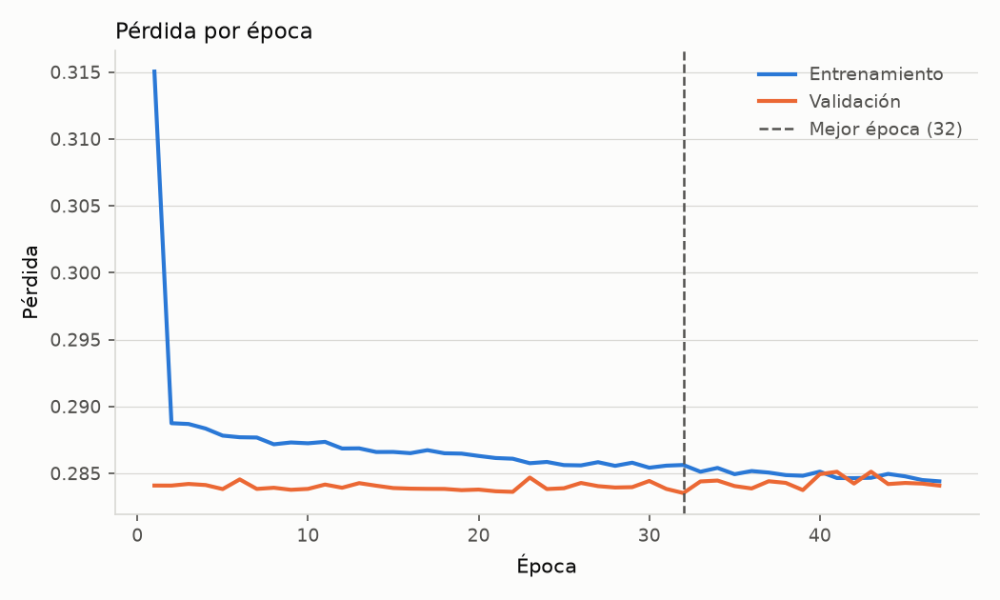
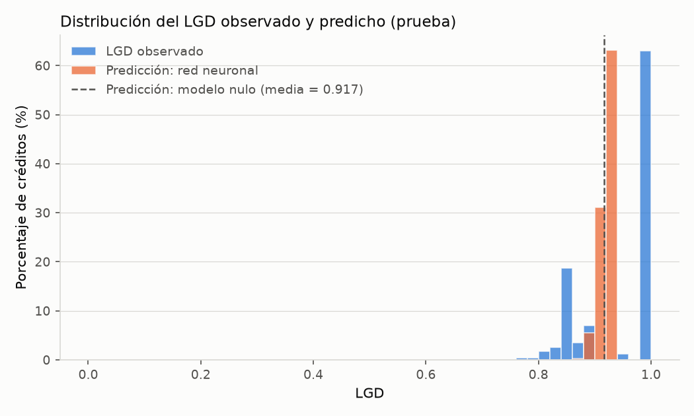

Resumen
Antes de aprobar un préstamo, un banco necesita responder dos preguntas muy concretas: ¿qué tan probable es que el cliente deje de pagar? y, si eso ocurre, ¿cuánto dinero terminará perdiendo después de intentar cobrarlo? En este trabajo respondemos ambas preguntas usando perceptrones multicapa sobre créditos de consumo sin garantía de Lending Club, y juntamos los dos resultados para estimar la pérdida esperada de cada préstamo desde el momento en que se aprueba.
Como las redes neuronales no siempre son la mejor opción para datos en tablas, pusimos a prueba cada red frente a un modelo sencillo de referencia bajo reglas estrictamente justas: exactamente los mismos datos preparados sin información del futuro, las mismas particiones temporales para simular el paso real del tiempo, un presupuesto de búsqueda de configuraciones explícito y treinta corridas independientes para medir qué tanto varían los resultados por puro azar.
Por último, convertimos el modelo de riesgo en una tarjeta de puntaje clara para cualquier solicitante, analizamos qué factores pesan más en la decisión y publicamos una aplicación web donde cualquier persona puede calcular su puntaje y probar qué tendría que cambiar en su perfil para mejorarlo.
Caso de uso
Contexto del negocio, decisiones y regla anti-fuga
Lending Club es una plataforma estadounidense de préstamos entre pares (peer-to-peer lending) que conecta a solicitantes con inversionistas o bancos. Sus créditos son de consumo sin garantía prendaria ni hipotecaria (unsecured consumer loans): a diferencia de un crédito hipotecario o vehicular, no existe un activo tangible de respaldo, por lo que si el prestatario entra en cesación de pagos la entidad enfrenta una pérdida crediticia directa.
| Pregunta | Definición |
|---|---|
| ¿Quién usa el modelo? | El analista de riesgo crediticio o el motor automatizado de originación de la entidad. |
| ¿En qué momento se usa el modelo? | Al momento exacto de la solicitud y evaluación del crédito, antes de decidir su otorgamiento o desembolso. |
| ¿Para qué decisiones sirve el modelo? | 1) Admisión y pérdida esperada: evaluar la probabilidad de
incumplimiento (PD) y el costo estimado de pérdida en caso de impago (LGD y pérdida esperada). 2) Scorecard: asignar un puntaje transparente (300 a 850 puntos) comprensible para el banco y el cliente. |
| ¿Con qué información se entrena el modelo? | Únicamente variables conocidas y verificadas en la fecha de originación
(issue_d): capacidad de pago, historial crediticio, liquidez rotativa, estabilidad
laboral y condiciones del préstamo. |
Datos
Se usa el conjunto Credit Risk Analysis de Kaggle (Ranadeep, s. f.), descargado el 27 de octubre de 2026, con créditos de consumo de Lending Club. El significado de cada variable se cita desde el diccionario oficial (LendingClub, s. f.), no desde una herramienta de IA.
- Fuente
- Kaggle · Credit Risk Analysis (
loan.csv) - Registros
- 887 379 créditos
- Variables
- 74 columnas
- Período
- Originación entre junio de 2007 y diciembre de 2015
- Fecha de descarga
- 27 de octubre de 2026
- Diccionario
data/LCDataDictionary.xlsx, hojaLoanStats
| Aspecto | Detalle |
|---|---|
| De dónde se bajaron | Repositorio público Credit Risk Analysis en Kaggle (ranadeep/credit-risk-dataset, archivo crudo loan.csv de Lending Club). |
| Fecha de descarga | 27 de octubre de 2026. |
| Qué contiene la descarga | 887 379 créditos de consumo y 74 columnas con originación entre junio de 2007 y diciembre de 2015, acompañados del diccionario oficial LCDataDictionary.xlsx (hoja LoanStats). |
| Momento de decisión | Al evaluar la solicitud en la fecha de originación (issue_d), antes de aprobar o desembolsar. |
Nota. Elaboración propia a partir del conjunto descargado en Kaggle (Ranadeep, s. f.) y su diccionario oficial (LendingClub, s. f.).
El archivo crudo pesa cerca de 442 MB y no se sube al repositorio.1Se versionan las tablas procesadas en formato Parquet y los modelos entrenados. Ver la sección de reproducibilidad.
Información permitida frente a información prohibida
Para entrenar sin fuga de información (no data leakage), solo ingresan variables disponibles y
verificadas en la fecha de originación (issue_d). De las 74 columnas del
archivo original, se seleccionan únicamente 21 variables base (13 numéricas originales, 3
numéricas derivadas al originar y 5 categóricas) que, tras imputación con indicadores de faltantes y
codificación one-hot, producen 54 variables numéricas de entrada. Otras
14 columnas generadas después del desembolso quedan explícitamente prohibidas, y las
restantes columnas administrativas, de texto libre o identificadores se descartan en la selección.
| Variable (tipo) | Significado literal (LCDataDictionary.xlsx · LoanStats) |
Rol en el análisis de riesgo | Uso |
|---|---|---|---|
| Dimensión 1 · Capacidad de pago y carga financiera (flujo de caja) | |||
annual_incNumérica |
Ingreso anual autodeclarado por el solicitante durante el registro. | A mayor ingreso, mayor capacidad de ahorro y resiliencia ante contingencias económicas. | Sí entra |
dtiNumérica |
Relación entre los pagos mensuales totales de deuda (sin hipoteca ni este préstamo LC) y el ingreso mensual autodeclarado. | Predictor crítico. Un DTI elevado (ej. 45 %) revela asfixia financiera y alta vulnerabilidad al impago. | Sí entra |
installmentNumérica |
Cuota mensual que deberá pagar el prestatario si se origina el crédito. | Mide la carga directa que el nuevo préstamo impone sobre el flujo de caja mensual. | Sí entra |
loan_amntNumérica |
Monto listado del préstamo solicitado por el prestatario; si el departamento de crédito lo reduce posteriormente, ese cambio se refleja en este valor. | Montos mayores exigen un esfuerzo prolongado de pago y elevan la exposición ante impago. | Sí entra |
funded_amntNumérica |
Monto comprometido y fondeado para ese crédito en el momento de emisión. | Captura la exposición efectiva comprometida en la originación del préstamo. | Sí entra |
| Dimensión 2 · Carácter e historial crediticio (comportamiento pasado) | |||
delinq_2yrsNumérica |
Número de incidencias de mora de 30+ días en el historial durante los últimos 2 años. | Quien tuvo moras recientes presenta mayor probabilidad de reincidir en incumplimiento. | Sí entra |
pub_recNumérica |
Número de registros públicos desfavorables. | Incluye quiebras, bancarrotas o embargos; es señal crítica de insolvencia estructural previa frente a acreedores. | Sí entra |
inq_last_6mthsNumérica |
Consultas de crédito en el buró en los últimos 6 meses (excluyendo auto e hipoteca). | Varias consultas recientes revelan búsqueda urgente de liquidez (credit hunger). | Sí entra |
meses_historial_creditoDerivada ( earliest_cr_line) |
Antigüedad crediticia en meses desde la apertura de la primera línea reportada hasta issue_d. |
Un historial maduro con pocos incidentes refleja disciplina y confiabilidad sostenida. | Sí entra |
| Dimensión 3 · Estrés de liquidez y líneas rotativas | |||
revol_utilNumérica |
Porcentaje de utilización de crédito rotativo respecto al cupo total disponible. | Predictor clave. Usar casi todo el cupo (ej. 90 %) deja sin margen ante imprevistos; por debajo del 30 % sugiere holgura. | Sí entra |
revol_balNumérica |
Saldo total adeudado en líneas de crédito rotativo. | Refleja la magnitud nominal de la deuda corriente de corto plazo. | Sí entra |
open_accNumérica |
Número de líneas de crédito abiertas actualmente en el expediente del solicitante. | Mide la carga simultánea de obligaciones activas que administra el cliente. | Sí entra |
total_accNumérica |
Número total de líneas de crédito históricas y vigentes registradas en el expediente. | Captura la profundidad, madurez y diversificación de la experiencia crediticia. | Sí entra |
| Dimensión 4 · Estabilidad laboral y arraigo | |||
antiguedad_empleoDerivada ( emp_length) |
Años en el empleo actual (escala de 0 para menos de 1 año hasta 10 para diez años o más). | Mayor permanencia laboral reduce el riesgo de interrupción súbita de ingresos. | Sí entra |
home_ownershipCategórica |
Tenencia de vivienda declarada en el registro (RENT, OWN, MORTGAGE, OTHER). |
Propietarios o compradores con hipoteca suelen mostrar mayor arraigo y respaldo indirecto que arrendatarios. | Sí entra |
verification_statusCategórica ( is_inc_v) |
Indica si el ingreso o su fuente fueron verificados documentalmente por Lending Club. | Señala el grado de respaldo documental sobre el ingreso declarado por el solicitante. | Sí entra |
| Dimensión 5 · Condiciones del crédito y tarificación en originación | |||
plazo_mesesDerivada ( term) |
Plazo pactado en meses para amortizar el préstamo (36 o 60 meses). | Horizontes más largos (5 años frente a 3) aumentan la exposición a choques económicos. | Sí entra |
purposeCategórica |
Categoría proporcionada por el prestatario para la solicitud del préstamo. | Destinos como small_business presentan históricamente mayor siniestralidad que debt_consolidation. |
Sí entra |
gradeCategórica |
Grado de préstamo asignado por Lending Club. | Toma valores de A a G en loan.csv y sintetiza la evaluación inicial de riesgo al emitir el crédito. |
Sí entra |
int_rateNumérica |
Tasa de interés del préstamo. | Tasa anual asignada en originación; refleja la prima de riesgo y eleva la carga financiera del deudor. | Sí entra |
initial_list_statusCategórica |
Estado inicial de listado del préstamo (valores posibles: W, F). |
En loan.csv aparece como bloque completo institucional (w) o fraccionado minorista (f), capturando el canal de colocación. |
Sí entra |
Nota. La columna de significado literal proviene directamente de la hoja
LoanStats del diccionario oficial LCDataDictionary.xlsx (LendingClub, s. f.); en dicho archivo la columna
verification_status de loan.csv figura como is_inc_v, y las variables
derivadas (meses_historial_credito, antiguedad_empleo, plazo_meses)
toman su definición de sus campos originales (earliest_cr_line, emp_length,
term). Los ejemplos observados y el rol de riesgo corresponden al análisis sobre
loan.csv, conservando grade e int_rate bajo el supuesto de evaluar
solicitudes ya pre-tarificadas en la originación.
| Columna(s) | Significado (LCDataDictionary) |
Por qué NO entra como predictor | Uso |
|---|---|---|---|
| 1 · Variable de desenlace | |||
loan_status |
Estado actual o final observado del préstamo (Fully Paid, Charged Off, etc.). | Define la etiqueta objetivo binaria (\(Y\)) en PD y el filtro de castigos en LGD; incluirla revelaría la respuesta. | No entra |
| 2 · Saldos vivos, pagos y fechas posteriores al desembolso | |||
out_prncpout_prncp_inv |
Saldo de capital aún pendiente por amortizar (total y porción de inversionistas). | Evoluciona mes a mes después de originar el crédito; en la solicitud vale todo el principal. | No entra |
total_pymnttotal_pymnt_inv |
Pagos totales acumulados recibidos a la fecha de corte del dataset. | Resume el desempeño futuro del cliente a lo largo de la vida del préstamo. | No entra |
total_rec_prncptotal_rec_int |
Capital e intereses efectivamente recaudados hasta la fecha. | Son consecuencia directa de si el cliente pagó o dejó de pagar tras el desembolso. | No entra |
total_rec_late_fee |
Cargos por mora cobrados hasta la fecha. | Solo se generan cuando el prestatario incurre en atrasos posteriores a la aprobación. | No entra |
last_pymnt_dlast_pymnt_amntnext_pymnt_d |
Último mes en que se recibió pago, monto del último pago recibido y próxima fecha programada de pago. | Reflejan eventos futuros de tesorería posteriores al momento de decisión. | No entra |
| 3 · Recuperaciones tras castigo | |||
recoveriescollection_recovery_fee |
Recuperación bruta posterior al castigo y comisión de cobranza asociada. | Solo existen tras declarar el impago; se usan únicamente para calcular el objetivo LGD en la Parte 2. | No entra |
| 4 · Seguimiento posterior del buró | |||
last_credit_pull_d |
Mes más reciente en que Lending Club consultó el reporte crediticio del préstamo. | Corresponde a revisiones de seguimiento hechas durante la vigencia del crédito, nunca en originación. | No entra |
Nota. Definiciones tomadas de la hoja LoanStats de
LCDataDictionary.xlsx (LendingClub, s. f.).
Ecuación general, variables objetivo y partición
Ecuación general del problema: pérdida esperada
Antes de aprobar un crédito de consumo sin garantía, el banco debe responder dos preguntas concretas: 1) ¿qué tan probable es que el cliente incumpla? y 2) si incumple, ¿qué fracción de la deuda se perderá tras los cobros? Para responder ambas preguntas desde la originación, el proyecto se estructura alrededor de la ecuación general de pérdida esperada (\(E[L]\)):
- \(PD_i\) (Probabilidad de Incumplimiento · Parte 1): probabilidad de que el crédito \(i\) termine en incumplimiento (\(Y = 1\)).
- \(LGD_i\) (Pérdida Dado el Incumplimiento · Parte 2): fracción de la deuda pendiente que no se logra recuperar tras la gestión de cobro, en el rango \([0, 1]\).
- \(EAD_i\) (Exposición al Incumplimiento): monto de capital que seguiría pendiente de pago al momento de producirse el impago.
- \(E[L]_i\) y \(E[L]_{\text{total}}\) (Resultado final): pérdida monetaria esperada para cada crédito \(i\); la suma sobre toda la cartera evaluada entrega la pérdida esperada total.
Parte 1 · Modelado de \(PD\)
Clasificación binaria supervisada sobre solicitudes con desenlace cerrado para estimar \(P(Y = 1 \mid X)\).
Parte 2 · Modelado de \(LGD\)
Regresión fraccional acotada en \([0, 1]\) sobre créditos castigados para estimar la severidad de pérdida.
Integración · \(E[L]\)
Combina \(\widehat{PD}_i \cdot \widehat{LGD}_i \cdot EAD_i\) por crédito y agrega la pérdida esperada total.
Variables objetivo (PD y LGD)
Para entrenar los modelos de la Parte 1 y la Parte 2 de forma supervisada, primero se traduce la columna
loan_status (estado observado del crédito) en la etiqueta binaria malo
(\(Y \in \{0, 1\}\)) para PD y en la máscara booleana castigado para
LGD. Los créditos que aún siguen vigentes o en estados tempranos sin desenlace cerrado se marcan
como NA y se excluyen del ajuste y de la evaluación.
loan_status
para las variables objetivo de PD (malo) y LGD (castigado)Estado original (loan_status) |
Código \(Y\) | Uso en el proyecto | Justificación financiera |
|---|---|---|---|
Fully Paid |
0 · Bueno | PD (\(Y = 0\)) | Buen pagador: amortizó capital e intereses en su totalidad. |
Does not meet the credit policy. Status:Fully Paid |
0 · Bueno | PD (\(Y = 0\)) | Buen pagador confirmado, aunque el crédito no cumplía políticas iniciales. |
Charged Off |
1 · Malo | PD (\(Y = 1\)) y LGD | Mal pagador: declarado incobrable, castigado contablemente y enviado a cobranza. |
Does not meet the credit policy. Status:Charged Off |
1 · Malo | PD (\(Y = 1\)) y LGD | Mal pagador fuera de política inicial que terminó castigado con pérdida. |
Default |
1 · Malo | Solo PD (\(Y = 1\)) | Mal pagador: impago confirmado y cesación prolongada, aún sin cobranza registrada tras castigo. |
Late (31-120 days) |
1 · Malo | Solo PD (\(Y = 1\)) | Mal pagador: mora grave con probabilidad mínima de recuperación espontánea, aún sin castigo. |
Current, Issued,In Grace Period, Late (16-30 days) |
NA |
Excluidos | Créditos abiertos o censurados: su desenlace final aún no se conoce al corte de los datos. |
Nota. Adaptado de Definición_trabajo/explicacion_problema.md,
parte_1/configs/pd.yaml y parte_2/configs/lgd.yaml.
Así quedan definidas ambas variables objetivo desde el planteamiento del problema: la Parte 1 (PD) modela el evento binario de incumplimiento (\(Y = 1\) frente a \(Y = 0\)) sobre los créditos con desenlace cerrado, mientras que la Parte 2 (LGD) modela la fracción continua de pérdida en \([0, 1]\) exclusivamente sobre los créditos castigados (cuya fórmula exacta de cálculo a partir de recuperaciones y capital se detalla en la Sección 6).
Partición por fecha de originación
| Conjunto | Años | Créditos (PD) | % malos | Castigados (LGD) |
|---|---|---|---|---|
| Entrenamiento | 2007–2012 | 90 347 | 16,30 | 14 419 |
| Validación | 2013 | 73 194 | 22,95 | 14 836 |
| Prueba | 2014 | 74 154 | 26,22 | 13 981 |
| Excluido | 2015 | — | — | 2 773 |
Nota. Fuentes: parte_1/configs/pd.yaml y
parte_2/reports/preprocesamiento/conteos_por_anio.csv.
Los créditos de 2015 se excluyen: el 93 % no tiene desenlace conocido.Censura por la fecha de recolección de los datos
| Años | Sin desenlace conocido |
|---|---|
| 2007–2012 | 3 % |
| 2013 | 46 % |
| 2014 | 69 % |
| 2015 | 93 % |
Preprocesamiento compartido
Las dos partes usan el mismo preprocesador, ajustado una sola vez con los 90 347 créditos de entrenamiento, para que la multiplicación PD · LGD tenga sentido y la comparación entre modelos sea justa.
- Cargaloan.csv, 887 379 filas
- Limpiezaporcentajes, plazo, antigüedad
- Objetivomalo ∈ {0, 1, NA}
- Particiónpor
issue_d - Transformaciónmediana, estandarizar, one-hot
- 54 variablesParquet + joblib
- Entradas: 13 numéricas originales, 3 derivadas (
plazo_meses,antiguedad_empleo,meses_historial_credito) y 5 categóricas. - Faltantes numéricos: imputación con la mediana más un indicador 0/1.
- Escalado: estandarización con media 0 y desviación estándar 1.
- Categóricas: one-hot; las categorías con menos del 0,5 % se agrupan.
Probabilidad de incumplimiento
Parte 1 · Clasificación binaria
Se modela \(P(Y = 1 \mid X)\), la probabilidad de que un crédito sea malo, con una regresión logística como referencia y un perceptrón multicapa (MLP).
Análisis descriptivo e hipótesis
Modelos y resultados preliminares
Regresión logística
- Parámetros
- 55
- Regularización
- L2 (C = 0,1)
- Tiempo
- 1,4 s
- AUC prueba
- 0,6818
MLP inicial (54-64-32-1)
- Parámetros
- 5 633
- Regularización
- L2 (α = 0,001) y parada temprana
- Tiempo
- 13,7 s
- AUC prueba
- 0,6803
| Modelo | Conjunto | AUC | Gini | KS | Brier |
|---|---|---|---|---|---|
| Regresión logística | Validación | 0,6820 | 0,3641 | 0,2661 | 0,1662 |
| Regresión logística | Prueba | 0,6818 | 0,3637 | 0,2648 | 0,1832 |
| MLP inicial | Validación | 0,6827 | 0,3655 | 0,2657 | 0,1665 |
| MLP inicial | Prueba | 0,6803 | 0,3606 | 0,2615 | 0,1847 |
Nota. Fuente: parte_1/models/metricas_comparacion.json. El MLP es una
única corrida sin búsqueda de hiperparámetros; no es aún comparable con el resultado final.
Búsqueda de hiperparámetros y 30 semillas
parte_1/src/modelos.py →
parte_1/figures/busqueda_hiperparametros.pngEvaluación: discriminación y calibración
parte_1/src/evaluacion.py →
parte_1/figures/roc_prueba.pngparte_1/src/evaluacion.py →
parte_1/figures/ks_prueba.pngparte_1/src/evaluacion.py →
parte_1/figures/calibracion_pd.pngScorecard
La scorecard transforma la probabilidad en puntos. Con puntaje base \(P_0\), odds de referencia \(\theta_0\) y puntos para duplicar las odds (PDO):
Pendiente · Parte 1 Verificar la derivación y los valores de \(P_0\), \(\theta_0\) y PDO con los que se construye la tabla de puntos.
parte_1/src/scorecard.py →
parte_1/figures/distribucion_puntajes.pngVariables de riesgo e interpretabilidad
parte_1/src/interpretabilidad.py →
parte_1/figures/importancia_permutacion.pngPérdida dado incumplimiento
Parte 2 · Regresión
Definición de la variable objetivo
El LGD es la fracción de la deuda pendiente que se pierde después del proceso de cobro. Se construye con campos del conjunto de datos:
Se usan solo los créditos castigados2Charged Off: crédito declarado incobrable y enviado a cobranza, según el diccionario de LendingClub. Las recuperaciones se registran después del castigo.. Los créditos en Default o Late (31-120 days) cuentan como malos para la PD, pero no tienen cobranza registrada y su LGD saldría igual a 1 por construcción.
| Campo | Definición en el diccionario | Motivo |
|---|---|---|
funded_amnt |
Total amount committed to that loan | Lo desembolsado; se prefiere a loan_amnt y
funded_amnt_inv. |
total_rec_prncp |
Principal received to date | Capital devuelto antes del incumplimiento. |
recoveries |
Post charge off gross recovery | Lo cobrado después del castigo. |
collection_recovery_fee |
Post charge off collection fee | Se resta porque lo retiene la agencia de cobranza. |
De los 46 009 créditos castigados, 38 casos con LGD menor que 0 se llevaron a 0 y ninguno superó 1. La media es 0,930 y la mediana 0,981: el 47 % de los Charged Off no recuperó nada, así que su LGD es exactamente 1.
Modelos y presupuesto de búsqueda
Se comparan un modelo nulo (siempre predice el LGD medio de entrenamiento), una regresión lineal y un MLP con salida sigmoide, que mantiene la predicción en \([0, 1]\). La red usa entropía cruzada binaria con objetivo fraccional (fractional logit; Papke y Wooldridge, 1996) y el optimizador Adam (Kingma y Ba, 2015).
Regresión lineal
- Parámetros
- 55
- Configuraciones
- 1
- Tiempo de ajuste
- 0,04 s
MLP (64-32-16, tanh)
- Parámetros
- 6 145
- Configuraciones
- 40
- Búsqueda
- 237,5 s
- 30 semillas
- 108,9 s
| Hiperparámetro | Valor |
|---|---|
| Capas ocultas | 64 · 32 · 16 |
| Activación | tanh |
| Dropout | 0,1 |
| Función de pérdida | Entropía cruzada binaria |
| Optimizador | Adam |
| Tasa de aprendizaje | 0,00365 |
| Penalización L2 | 2,89 × 10⁻⁵ |
| Tamaño de lote | 128 |
Nota. Fuente: parte_2/results/red/mejor_configuracion.yaml.

Nota. Elaboración propia. Generada por parte_2/src/red_lgd.py.
Evaluación: MAE, RMSE y distribución
| Modelo | Parámetros | MAE | RMSE |
|---|---|---|---|
| Nulo (media) | 1 | 0,0775 | 0,0859 |
| Nulo (mediana) | 1 | 0,0699 | 0,0811 |
| Regresión lineal | 55 | 0,0758 | 0,0858 |
| MLP (media de 30 semillas) | 6 145 | 0,0762 | 0,0855 |
Nota. Fuentes: parte_2/results/referencia/metricas.csv y
parte_2/results/red/resumen_semillas.csv.
| Conjunto | Métrica | Media | Desv. est. | Mejor | Peor |
|---|---|---|---|---|---|
| Entrenamiento | MAE | 0,0729 | 0,0006 | 0,0716 | 0,0744 |
| Entrenamiento | RMSE | 0,1155 | 0,0003 | 0,1148 | 0,1161 |
| Validación | MAE | 0,0755 | 0,0002 | 0,0750 | 0,0759 |
| Validación | RMSE | 0,0923 | 0,0001 | 0,0922 | 0,0924 |
| Prueba | MAE | 0,0762 | 0,0005 | 0,0748 | 0,0773 |
| Prueba | RMSE | 0,0855 | 0,0005 | 0,0841 | 0,0864 |
Nota. Semillas 1 a 30. El modelo guardado usa la semilla 8. Fuente:
parte_2/results/red/resumen_semillas.csv.

Nota. Elaboración propia. Generada por parte_2/src/red_lgd.py. Versión
del modelo de referencia: assets/img/figuras/parte_2/referencia/distribucion_lgd_prueba.png.


Nota. Elaboración propia. Izquierda: regresión lineal. Derecha: red neuronal.
Pérdida esperada
PD × LGD × EAD
Para cada crédito de prueba se combinan las dos partes:
La EAD por defecto es el monto desembolsado multiplicado por la fracción promedio que seguía pendiente al incumplir, estimada en los castigados de entrenamiento y separada por plazo: 0,601 para 36 meses y 0,749 para 60 meses. Es coherente con la definición del LGD.
| Indicador | Valor |
|---|---|
| Créditos de prueba | 74 154 |
| Monto desembolsado (US$) | 1 061 569 725 |
| Pérdida esperada total (US$) | 141 208 624 |
| Pérdida observada, cota inferior (US$) | 168 195 586 |
| Pérdida observada, cota superior (US$) | 229 530 555 |
| PD media predicha | 0,196 |
| Tasa real de malos | 0,262 |
| LGD medio predicho | 0,923 |
Nota. Fuente: parte_2/results/perdida_esperada/resumen.json. La cota
inferior suma la pérdida real de los castigados; la superior supone que los créditos en Default o
Late pierden toda su deuda pendiente.

Nota. Elaboración propia. Generada por
parte_2/src/perdida_esperada.py.
Comparación justa
El enunciado exige mismos datos, presupuesto de búsqueda explícito, 30 semillas y número de parámetros. Esta tabla se llena a medida que cada parte entrega sus resultados.
| Tarea | Modelo | Parámetros | Configuraciones | Semillas |
|---|---|---|---|---|
| PD | Regresión logística | 55 | 1 | — |
| PD | MLP | 5 633 (inicial) | Pendiente | Pendiente |
| LGD | Regresión lineal | 55 | 1 | — |
| LGD | MLP | 6 145 | 40 | 30 |
Discusión
¿Qué aportó la red neuronal?
Hipótesis: confirmadas y no confirmadas
Aprendizajes sobre el problema
Cacería de la alucinación
Al menos cinco hallazgos, en al menos tres categorías (matemáticas, código, datos del mundo real, bibliografía, conceptos). Cada uno con prompt literal, respuesta de la IA, sospecha, evidencia, corrección y lección aprendida. Una tarjeta sin evidencia no se publica.
Hallazgo 1 Categoría · pendiente
- Prompt literal
- Pendiente
- Respuesta de la IA
- Pendiente
- Cómo se sospechó
- Pendiente
- Evidencia
- Pendiente
- Corrección
- Pendiente
- Lección aprendida
- Pendiente
Hallazgo 2 Categoría · pendiente
- Prompt literal
- Pendiente
- Respuesta de la IA
- Pendiente
- Cómo se sospechó
- Pendiente
- Evidencia
- Pendiente
- Corrección
- Pendiente
- Lección aprendida
- Pendiente
Hallazgo 3 Categoría · pendiente
- Prompt literal
- Pendiente
- Respuesta de la IA
- Pendiente
- Cómo se sospechó
- Pendiente
- Evidencia
- Pendiente
- Corrección
- Pendiente
- Lección aprendida
- Pendiente
Hallazgo 4 Categoría · pendiente
- Prompt literal
- Pendiente
- Respuesta de la IA
- Pendiente
- Cómo se sospechó
- Pendiente
- Evidencia
- Pendiente
- Corrección
- Pendiente
- Lección aprendida
- Pendiente
Hallazgo 5 Categoría · pendiente
- Prompt literal
- Pendiente
- Respuesta de la IA
- Pendiente
- Cómo se sospechó
- Pendiente
- Evidencia
- Pendiente
- Corrección
- Pendiente
- Lección aprendida
- Pendiente
Reproducibilidad
Todo el proyecto usa un único entorno virtual en Python 3.12. Los comandos se ejecutan desde
parte_2/.
python -m pip install -r requirements.txt
python -m src.preprocesamiento --config configs/lgd.yaml
python -m src.referencia_lgd --config configs/lgd.yaml
python -m src.red_lgd --config configs/lgd.yaml --modo busqueda
python -m src.red_lgd --config configs/lgd.yaml --modo semillas
python -m src.perdida_esperada --config configs/lgd.yamlPara una demostración de menos de dos minutos se agrega --demo a cualquier modo. Cualquier
parámetro se puede cambiar sin editar archivos, por ejemplo
--set particion.fin_entrenamiento=2012-12-31.
Contribuciones y videos
Referencias
- Ranadeep. (s. f.). Credit risk analysis [Conjunto de datos]. Kaggle. https://www.kaggle.com/datasets/ranadeep/credit-risk-dataset
- LendingClub. (s. f.). LCDataDictionary [Diccionario de datos, hoja LoanStats]. Incluido en el conjunto de datos de Kaggle.
- Papke, L. E., y Wooldridge, J. M. (1996). Econometric methods for fractional response variables with an application to 401(k) plan participation rates. Journal of Applied Econometrics, 11(6), 619–632.
- Kingma, D. P., y Ba, J. (2015). Adam: A method for stochastic optimization. 3rd International Conference on Learning Representations (ICLR 2015). https://arxiv.org/abs/1412.6980